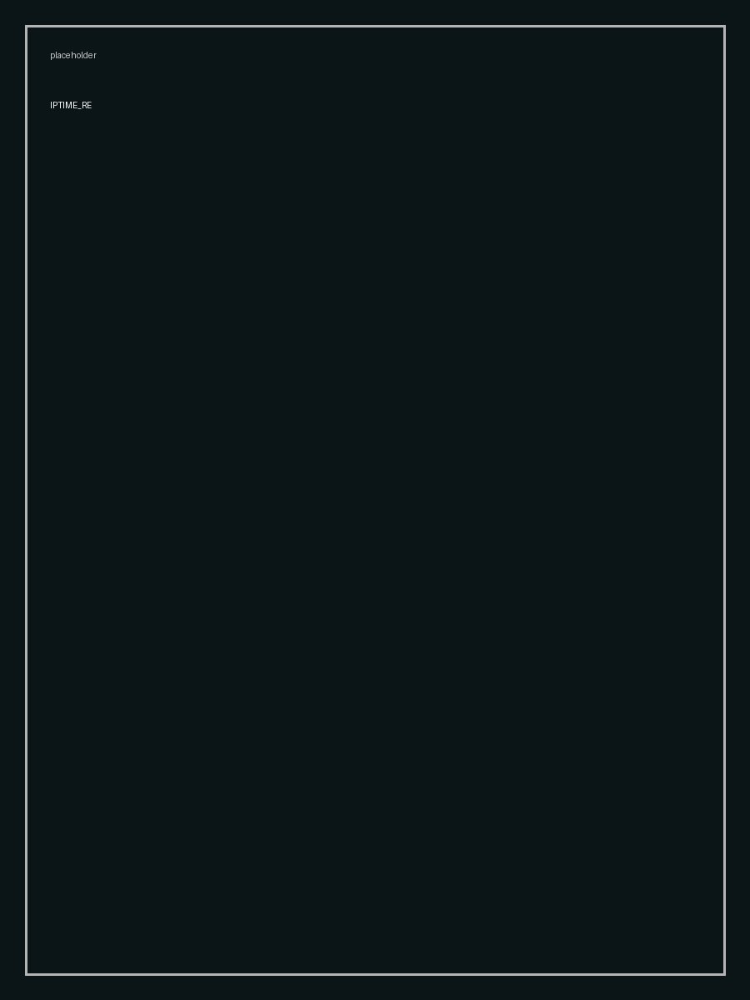

Project Overview
IPTIME RE 프로젝트에 대한 설명이 들어갑니다. 프로젝트의 배경, 목적, 과정 등을 상세히 작성할 수 있습니다.

Detail
프로젝트의 상세한 내용, 디자인 결정 사항, 사용된 기술 등을 작성합니다.
IPTIME RE 프로젝트에 대한 설명이 들어갑니다. 프로젝트의 배경, 목적, 과정 등을 상세히 작성할 수 있습니다.

프로젝트의 상세한 내용, 디자인 결정 사항, 사용된 기술 등을 작성합니다.